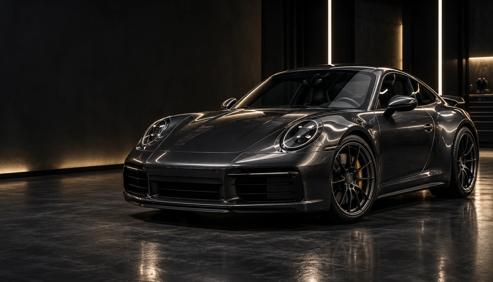
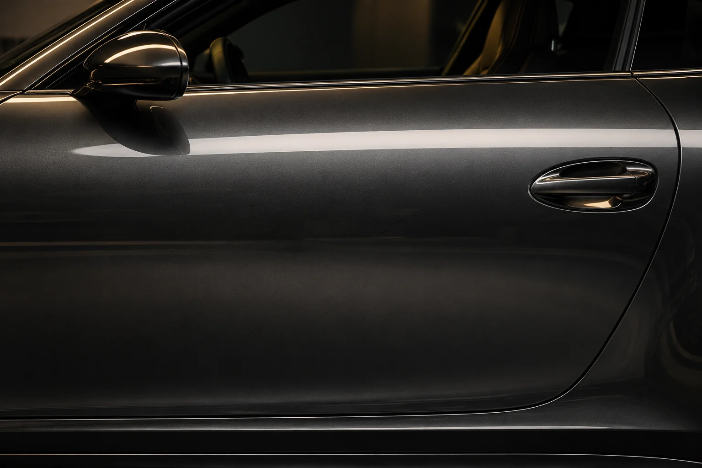
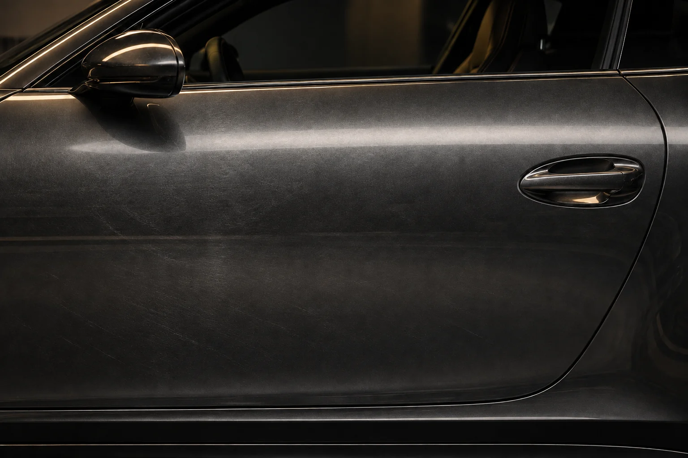

Внимание к каждой поверхности.
Красота в каждом отражении.
Уход под ваш
автомобиль
Подбираем состав работ под состояние кузова и салона. Начните с того, что важно для вас.
Что хочется изменить?
Выберите задачу — ниже появится подходящее направление. Окончательный состав работ определяется после осмотра.
Полировка кузова
Работа с мелкими царапинами и следами эксплуатации. Возвращаем поверхности глубину цвета и выразительный блеск.
- Осмотр состояния поверхности
- Подбор состава работ
- Полировка и проверка результата
- Когда рассмотреть
- Если после мойки остаются мелкие царапины и тусклые отражения.
- Что важно учесть
- Глубокие повреждения и сколы могут потребовать ремонта. Возможности полировки зависят от состояния покрытия.
Стоимость и срок — после осмотра.

Красота в каждом отраженииСначала задача.
Затем стоимость.
У одинаковых автомобилей может быть разное состояние. Поэтому состав ухода важнее универсального пакета.
Описать свою задачуЧто влияет на оценку
- Автомобиль и материалы
- Размер кузова, особенности отделки и поверхности, которым нужен уход.
- Состояние сейчас
- Глубина повреждений, характер загрязнений, прошлые ремонты и покрытия.
- Согласованный результат
- Локальная работа или комплексный уход. Состав, стоимость и срок обсуждаются до начала работ.
Для первого обсуждения полезны модель автомобиля, описание задачи и фотографии при хорошем освещении. В этом концепте расчёт и запись не выполняются.
Разница —
в отражении
Передвиньте границу, чтобы рассмотреть два состояния одной поверхности.

Мышью, касанием или стрелками клавиатуры.
Иллюстрация эффекта, созданная ИИ для концепта.
Сначала понять.
Потом довести до блеска.
Прозрачный процесс: согласуем задачу, уделим внимание деталям и проверим результат.
- 01
Осмотр и согласование
Обсуждаем задачу, оцениваем состояние автомобиля и выбираем подходящий состав работ.
- 02
Работа с деталями
Уделяем внимание каждой поверхности. Выполняем согласованный уход за кузовом или салоном.
- 03
Проверка результата
Осматриваем автомобиль вместе и обсуждаем дальнейший уход.
Перед тем,
как начать
Ответы на первые вопросы.
Как выбрать подходящую услугу?
Начните с того, что хотите изменить: состояние кузова, его защиту или чистоту салона. Окончательный состав работ лучше согласовать после осмотра.
Чем полировка отличается от покрытия?
Это разные задачи: полировка направлена на внешний вид поверхности, покрытие — на её дальнейший уход и защиту. В нашем концепте направления можно выбрать по отдельности.
От чего зависят стоимость и срок?
От состояния автомобиля и согласованного объёма работ. На этой демонстрационной странице нет фиксированного прайса действующей студии.
Можно ли записаться через этот сайт?
Это авторский концепт, а не действующая студия. Форма ниже подготовит текст обращения для копирования. Она не отправляет данные и не оформляет запись.
Хороший уход
начинается
с разговора.
Расскажите, какой автомобиль и какая услуга вас интересуют.
Демонстрационная форма.
Данные не отправляются и не сохраняются.